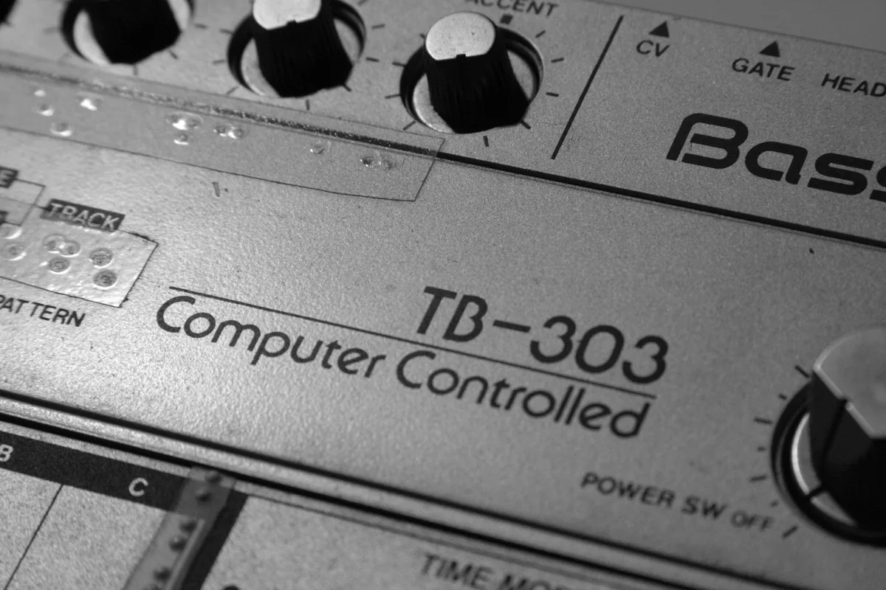
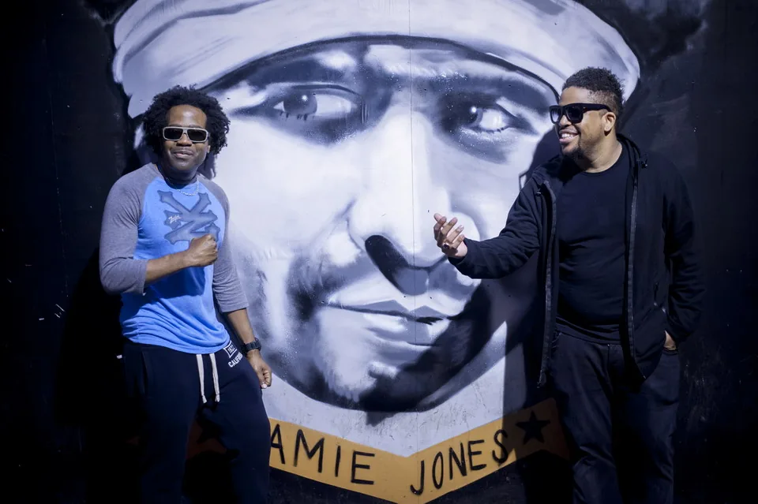

Acid house guide
Acid house: the TB-303 sound and how it reached Britain
A bass machine nobody wanted, three friends in Chicago, a DJ who played their tape four times in one night, and a British youth movement that borrowed the name.
A machine nobody wanted.
Acid house began with a machine nobody wanted. Roland sold the TB-303 as a bass player for guitarists who practised alone, it sounded nothing like a bass guitar, and it was withdrawn within three years. By the mid-1980s a used one could be found in a Chicago second-hand shop for $40.
A group of friends bought that one, turned its knobs while a drum machine ran, and a DJ played the result four times in one night until his crowd lost its mind. A year or two later the same sound was in the British top ten, on the front page of The Sun and in the House of Commons.
This guide keeps three things apart that are usually run together: the sound, the Chicago records that gave it a name, and the British movement that took the name and made it mean something much bigger.
What is acid house?
Acid house is a form of Chicago house music built around the Roland TB-303 bass synthesiser, whose short repeating pattern is changed by hand while it plays, so the line squelches, bends and slides over a steady four-to-the-floor beat. The first records came out of Chicago between 1986 and 1987, led by Phuture's "Acid Tracks". In Britain from 1987 to 1989, "acid house" also became the name for a whole youth movement of clubs, warehouse parties and outdoor raves, which is why the term can mean a genre, a sound or a moment in social history depending on who is using it.
The genre and the movement overlap but are not the same thing. Plenty of what British crowds danced to under the acid house banner in 1988 had no TB-303 on it at all: Chicago vocal house, Detroit techno, Italian piano records and Balearic oddities from Ibiza. The Chicago definition is narrower and more useful for a listener, because you can hear it.
The TB-303
What acid house sounds like.
The drums are ordinary Chicago house: a kick on every beat, handclaps or snares on two and four, hi-hats in between, usually from a Roland TR-808 or TR-909, at somewhere around 120 beats per minute. What makes it acid is the bassline.
The TB-303 plays a short sequence of notes, often only a bar or two long, and repeats it for minutes. Nothing about the notes changes. What changes is the tone, because the player is turning the filter knobs while the pattern runs. Opening the filter makes the line brighter and harsher, closing it makes it dull and rubbery, and raising the resonance adds the whistling, vocal quality that people describe as a squelch. Some notes are accented, some slide into the next one, and the combination gives a machine pattern the feel of something alive and slightly out of control.
That is also why acid records are long. The point of "Acid Tracks" is not a melody or a chorus but a twelve-minute performance on one pattern, where the listener follows the tone opening and closing the way a crowd follows a guitar solo.

The machine itself was a failure on its own terms. Roland released the TB-303 in 1981 as a "computerised bass" to accompany guitarists, at a list price of $395, and stopped making it in 1984. It did not sound like a bass guitar, it was awkward to programme, and unsold units ended up in second-hand shops. That cheapness is the precondition for everything that follows: acid was made by people who could afford only what other people had given up on.
Forty years later the story has reversed. Original units were selling for more than £1,200 by 2014, Roland has made modern versions twice, the TB-3 in 2014 and the TB-03 in 2017, and other manufacturers sell copies. The sound outlived the product line by decades.
1985 to 1987
Chicago: Phuture and "Acid Tracks".
Phuture was three friends from Chicago: Nathaniel Pierre Jones, who became DJ Pierre, Earl "Spanky" Smith Jr and Herbert "Herb J" Jackson. Pierre had heard about the TB-303 from a friend, Jasper G, who used it for basslines. Spanky found one second-hand and paid $40 for it.

In Pierre's own account for Red Bull Music Academy, the first session at Spanky's house produced the track that became "Acid Tracks". Spanky programmed the drums and Pierre turned the knobs on the 303, not knowing what the machine was supposed to do and finding the sound by moving everything at once. The group's working title was "In Your Mind".
They gave a cassette to Ron Hardy, the DJ at the Music Box, the club where Chicago's most adventurous dancers went. DJ Mag's history of the record describes what happened next: Hardy played it, the floor emptied, he played it again, and by the fourth time that night the crowd went wild. He kept it in his sets, and people who taped his nights started calling it Ron Hardy's acid track.
The accounts differ on when this happened. Some date the session to late 1985, others to 1986, and the only fixed point is the release. "Acid Tracks" came out on Larry Sherman's Trax Records in 1987 as a twelve-minute A-side. Marshall Jefferson is credited as producer; by the usual telling he slowed the track from about 130 BPM to 120 and oversaw the mix, while Pierre has said Jefferson added no new sounds. Phuture were paid $1,500.
Nothing about the record is complicated, and that is the argument for it. One drum pattern, one 303 pattern, and twelve minutes of someone listening to what the filter was doing and moving it again.
Phuture played the record live for Boiler Room in Chicago in 2014, nearly thirty years after the tape first reached the Music Box, and the set is still the best way to hear how little the idea needed. DJ Pierre carried the sound into three decades of DJing afterwards and still plays acid sets.
Chicago, 1986 to 1988
The records around it.
"Acid Tracks" is usually called the first acid house record, but it was not the first acid record to be pressed. Sleezy D's "I've Lost Control" came out on Trax in 1986, co-produced by Marshall Jefferson, with a TB-303 line crawling under a vocal about losing your mind. Jefferson has said he made it before anyone called the sound acid and did not know what he had.
Both claims can be true at once. "I've Lost Control" was on vinyl first. "Acid Tracks" was played first, gave the sound its name and set out what an acid track was: the 303 as the lead instrument rather than a bassline under something else. Which one "invented" acid house depends on whether you think a genre starts with a sound, a record in a shop or a name.
Within a year Chicago had a small wave of them. Armando Gallop's "Land of Confusion", released on the Westbrook label in 1987, stripped the idea down to drums and 303, and Pierre has named it as the first acid record that was simply funky with nothing added. Fast Eddie, Tyree Cooper and Larry Heard all put 303 lines on records in the same period, and Pierre went on to make more as Phuture and as Pierre's Pfantasy Club.
In Chicago, acid was one strand of a busy house scene: a handful of producers, Trax and a few smaller labels, and DJs like Hardy willing to play a record that emptied the floor twice before it filled it. What it became happened somewhere else.
The name
Why it is called acid house.
The short answer is Ron Hardy's audience. Phuture did not choose the word. It came from the name people gave the tape Hardy was playing, and Pierre has said the group simply took Hardy's name off it and kept the rest.
What the word meant to the people who first used it is less settled. Accounts of the Music Box link it to LSD, which was part of the club's scene. Pierre himself has said at different times that he thought it referred to acid rock, that the track sounded rough in the same way, and that he did not connect it with drugs. The academic Hillegonda Rietveld, in her history of house music, read the word as describing the fragmented, disorienting effect of the music itself.
A third explanation appeared in Britain and is almost certainly wrong. During the 1988 and 1989 panic it was claimed that "acid" was slang for "acid burning", meaning stealing samples from other records, and the claim was repeated in the House of Commons in March 1990. Paul Staines, who worked on publicity for the rave promoters' campaign against new party laws, later wrote that he had invented the story himself to make the scene sound less like a drug culture.
So the name is a drug reference by most accounts, a reference to rock music by the account of the man who made the record, and a piece of public relations by the account of someone who admitted inventing it. What nobody disputes is that the word stuck to the sound of the TB-303, and in Britain to everything around it.
Charanjit Singh, 1982
Was acid house invented in India?
In 1982 the Bombay film musician Charanjit Singh recorded an album called Synthesizing: Ten Ragas to a Disco Beat for the Gramophone Company of India. He used three new Roland machines, a Jupiter-8 synthesiser, a TR-808 drum machine and a TB-303 he had bought in Singapore soon after it came out, and played Indian classical ragas over disco rhythms. The 303's slide between notes suited raga melodies, which move smoothly up and down the scale.
Heard now, several tracks sound startlingly like acid house, five years before "Acid Tracks". The album sold poorly in India and disappeared. It was reissued in 2010 by the Dutch label Bombay Connection, collectors and critics started calling Singh a lost pioneer, and he toured the record internationally from 2012 until his death in 2015.
The fair reading is narrower than the headlines. Singh used the same machine in a similar way and got there first. There is no evidence that anyone in Chicago heard the album, and the Chicago producers arrived at the sound independently, with a different instrument setup and a different reason: dancers in a club, not a raga played at disco speed.
So the answer to the question is no, and also that the question is the wrong shape. Acid house as a genre, a name and a scene began in Chicago. The sound of a TB-303 being played that way was reached at least twice, by people who never met, which says more about the machine than about either of them.
1987 to 1989
How acid house reached Britain.
Chicago house records were already reaching Britain through import shops and a few DJs by 1986. What changed things was a holiday. In the summer of 1987 four London DJs, Paul Oakenfold, Danny Rampling, Nicky Holloway and Johnny Walker, went to Ibiza, heard DJ Alfredo play an open mixture of house and everything else at Amnesia, and came home wanting to recreate it.
Within a year London had Shoom, which Rampling opened in a basement gym in Southwark in November 1987, Oakenfold's Future and Spectrum, and Holloway's Trip at the Astoria. In Manchester the Haçienda ran house nights with Mike Pickering and Graeme Park, and the Thunderdome in Miles Platting became a centre for a harder local sound. The London clubs guide follows those rooms in detail.
Britain's own acid records came quickly. Baby Ford's "Oochy Koochy", released on Rhythm King in September 1988, is often called the first British acid house record. Others give that title to A Guy Called Gerald's "Voodoo Ray", recorded in Manchester in June 1988 and released on the Rham! label that November. It reached number 12 and spent eighteen weeks on the chart.
Gerald Simpson was also a founding member of 808 State, formed in 1987 around Martin Price's Eastern Bloc record shop. He left in 1989, the year their "Pacific State" reached number 10. A few years later he was making some of the earliest jungle, which is why he appears in the jungle guide as well as here.
Britain changed acid house as much as it adopted it. In Chicago it was a club music for a specific crowd. In Britain it became a youth culture with its own clothes, drugs, symbol and moral panic, and the word "acid" was stretched to cover almost any electronic dance music played at those parties.
1988 to 1990
The Second Summer of Love and the backlash.
The summers of 1988 and 1989 are remembered in Britain as the Second Summer of Love, an echo of San Francisco in 1967. Clubs ran out of room and parties moved to warehouses, then to fields. Promoters including Sunrise, Energy and Biology organised events for thousands of people, reached through phone lines and meeting points off the M25 so the police could not stop them in advance. The yellow smiley face, printed on flyers and T-shirts, became the scene's badge.
Pop music took the word straight into the charts. D Mob's "We Call It Acieed", with Gary Haisman shouting the title, came out in October 1988 and reached number 3. Then the press turned. In mid-October The Sun offered its readers smiley acid house T-shirts, and on 19 October it ran the headline "Evils of Ecstasy". The BBC dropped records it associated with drugs, and "We Call It Acieed" was pulled from its playlists after an appearance on Top of the Pops on 20 October.
No acid house record appeared on the programme for the next two months, until Stakker's "Humanoid", made by Brian Dougans, who later formed The Future Sound of London, reached number 17 and was played in December.
Legislation followed the headlines. In December 1989 the Conservative MP Graham Bright introduced a bill raising the maximum fine for running an unlicensed party from £2,000 to £20,000. It became the Entertainments (Increased Penalties) Act 1990. In January 1990 thousands of people marched to Trafalgar Square for the right to party. The law did not end the scene, but it pushed it towards licensed clubs and, later, the free-party rigs that the Criminal Justice Act 1994 went after.
By then the music had moved on. British producers were speeding it up and adding breakbeats, which became breakbeat hardcore and then jungle. The breakbeat guide and the UK electronic music timeline pick the story up from there.
After 1990: acid everywhere.
The TB-303 did not go away when the word "acid house" went out of fashion. In 1992 the Cologne duo Hardfloor, Oliver Bondzio and Ramon Zenker, released "Hardtrance Acperience", the record now known as "Acperience 1". The duo became known for running up to six 303s at once over a harder beat, and the record helped bring the sound back into European clubs as techno and trance took over.
Acid never became a closed genre after that. It is a sound that other styles borrow: acid techno, acid trance, acid lines in electro and in drum and bass. Most DJs who play it now do so inside techno or electro sets rather than as a genre of its own.
This site's catalogue of recorded DJ sets reflects that. Of the sets it holds, 688 are tagged acid. The names that appear most often are Love Letters and Mike Servito, Abby Echiverri, DJ Pierre and A Guy Called Gerald, with Helena Hauff among the most watched: a spread from the original Chicago and Manchester producers to DJs who were not born when "Acid Tracks" came out.
Gerald still performs live. His 2013 Boiler Room show is a good place to hear what the Manchester side of the story became: machines played in real time rather than records mixed.
Acid house, house and techno.
Acid house sits inside house music. It uses the same tempo and drum patterns as Chicago house and came out of the same clubs and labels, which is why acid house music is usually filed as a subgenre of house. What separates it is the TB-303 line in front.
House music is a much bigger subject with its own history, which this guide does not try to cover. The table below is only the family around acid.
| Style | Rough tempo | What leads the track | A record to start with |
|---|---|---|---|
| Chicago house | 118 to 128 BPM | Drum machines with piano, strings, vocals or a conventional bassline | Marshall Jefferson, "Move Your Body" |
| Acid house | 118 to 128 BPM | A TB-303 line in front, its filter moving all the time | Phuture, "Acid Tracks" |
| Detroit techno | 120 to 135 BPM | Machine rhythm and synthesiser lines, little or no vocal | Rhythim Is Rhythim, "Strings of Life" |
| Acid techno and acid trance | 130 to 145 BPM | The 303 over harder, faster techno drums | Hardfloor, "Acperience 1" |
Acid house FAQ.
What is acid house?
Acid house is a style of Chicago house music built around the Roland TB-303 bass synthesiser, whose repeating pattern is changed by hand as it plays so that it squelches and slides over a four-to-the-floor beat. It emerged in Chicago between 1986 and 1987, led by Phuture's "Acid Tracks", and in Britain the name also came to describe the club and rave movement of 1987 to 1989.
Why is it called acid house?
The name came from the audience at the Music Box in Chicago, where DJ Ron Hardy played Phuture's tape and people started calling it Ron Hardy's acid track. Most accounts link the word to LSD at the club. DJ Pierre has said he thought it referred to acid rock. A later British claim that it meant stealing samples was, by the account of the man who spread it, invented to take pressure off the scene.
Who is considered the father of acid house?
DJ Pierre of Phuture is the name most often given, because he played the TB-303 on "Acid Tracks", the record that named the genre. Spanky and Herb J were the other members of Phuture, Ron Hardy made the record popular by playing it, and Marshall Jefferson produced both "Acid Tracks" and the earlier "I've Lost Control". Charanjit Singh is sometimes called the father of acid house for an album he made in India in 1982.
Was acid house invented in India?
No, but the sound was reached there first. Charanjit Singh used a TB-303 and a TR-808 on his 1982 album Synthesizing: Ten Ragas to a Disco Beat, and several tracks sound like acid house. Nobody in Chicago is known to have heard it, so the Chicago producers arrived at the same sound independently. Acid house as a genre and a name began in Chicago.
What type of music is acid house?
Acid house is electronic dance music, a subgenre of house. It uses house tempo, usually around 120 BPM, and drum machine patterns, with a TB-303 bassline as the lead instrument. It is mostly instrumental and built for DJs to mix, with long tracks that develop by changing the tone of one pattern rather than through verses and choruses.
What is the difference between house and acid house?
Acid house is a form of house music. Both use the same tempo and four-to-the-floor drums, but acid house puts a TB-303 bassline, with its filter moving constantly, at the front of the track, where house would more often have a vocal, piano, strings or a conventional bassline.
Sources.
- Red Bull Music Academy Daily: The Story of Acid House, as told by DJ Pierre (2012)
- DJ Mag: Game Changers, Phuture "Acid Tracks" (2014)
- Wikipedia: Acid Tracks
- Wikipedia: Synthesizing: Ten Ragas to a Disco Beat
- Wikipedia: Roland TB-303
- Wikipedia: Second Summer of Love
- Wikipedia: We Call It Acieed
- Vice: A brief history of the smiley face, rave culture's most ubiquitous symbol
- Mixmag: The history of acid house in 100 tracks
- Set counts and artist frequencies are measured from this site's own catalogue of 62,824 recorded DJ sets, as of September 2026.
Continue reading
Read next.
 A32List / Europe festivals / ~13 min
A32List / Europe festivals / ~13 minBest Electronic Music Festivals in Europe 2027, Compared
Fourteen major festivals and seven smaller ones, from Tomorrowland to Garbicz, compared by sound, scale, setting and 2027 dates.
Read article → A03Timeline / UK music / ~27 min
A03Timeline / UK music / ~27 minThe Evolution of UK Electronic Music
Ten sounds that travelled from regional underground scenes into global culture.
Read article → A04Timeline / German music / ~11 min
A04Timeline / German music / ~11 minGerman Electronic Music History: From Kraftwerk to Techno
Cologne studios, Düsseldorf electronic pop, Frankfurt trance and the Detroit-Berlin alliance.
Read article → A08Guide / UK garage / ~16 min
A08Guide / UK garage / ~16 minWhat Is UK Garage? The Sound, 2-Step, Speed Garage and Bassline
London played an American record too fast until the beat broke. The branches it split into, and the numbers behind its revival.
Read article →